Professional land clearing, brush removal, pasture mowing, gravel driveway restoration & excavation across Pierce, King & Thurston Counties, WA. Quality work, every job.
What We Do
Three specialized rigs — one expert crew.
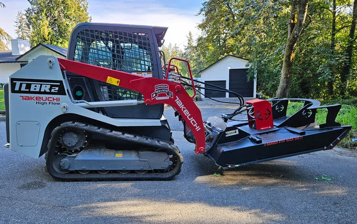
Our Takeuchi skid steer with the Rut Mfg Terminator XP brush cutter clears blackberries, blackberry bushes, dense overgrowth, and brush-covered land across Western Washington with precision.
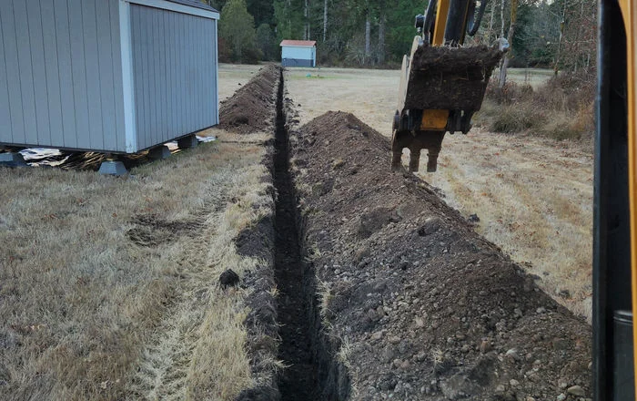
From deep trenching and land excavation to flail mowing retention ponds and drainage ditches — we handle the heavy-duty land clearing work other crews turn away in Pierce & King County.
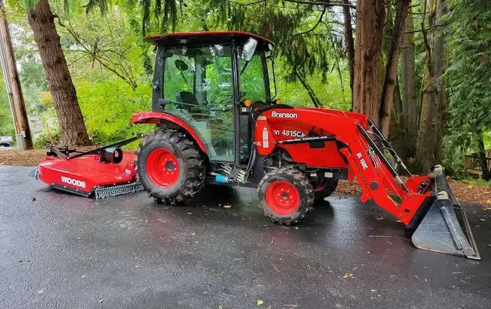
Wide-area brush hogging, pasture mowing, land grading, and year-round snow plowing for Auburn, Edgewood, Enumclaw, Puyallup & Federal Way, WA.
Our Work
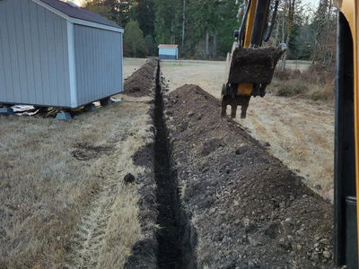
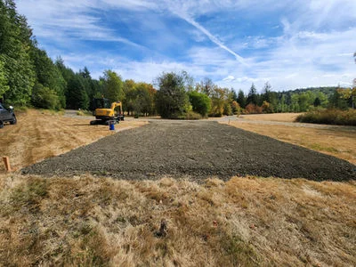
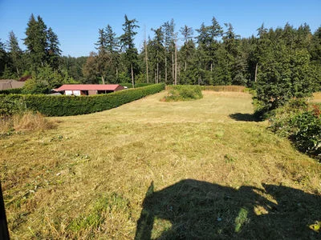
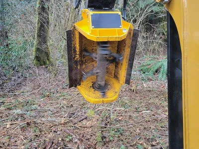
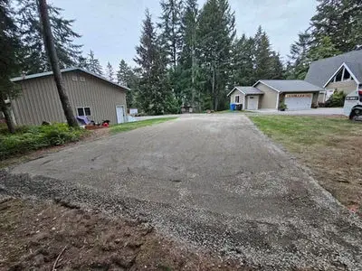
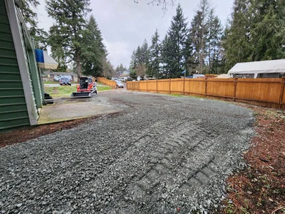
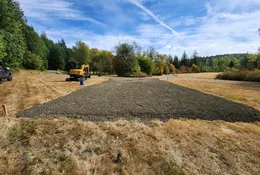
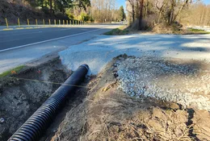
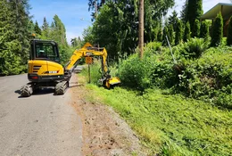
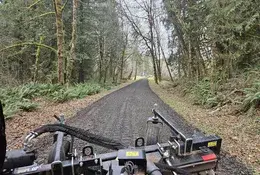
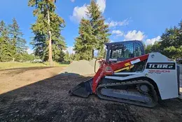
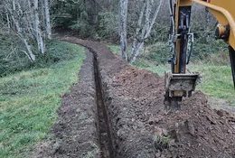
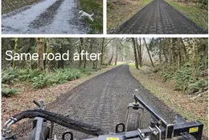
Get in Touch
Call or email for a free, no-obligation land clearing or brush removal estimate. We serve all of Pierce, King, and Thurston Counties, WA — including Auburn, Puyallup, Enumclaw, Edgewood, Federal Way, and Spanaway.